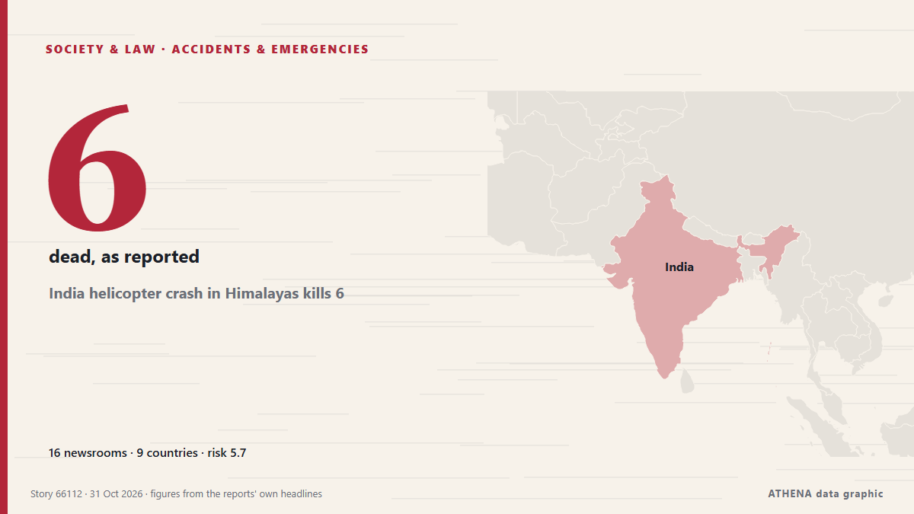

Accidentes y emergencias
| 18 oct | 0 |
|---|---|
| 19 oct | 0 |
| 20 oct | 0 |
| 21 oct | 0 |
| 22 oct | 0 |
| 23 oct | 1 |
| 24 oct | 2 |
| 25 oct | 0 |
| 26 oct | 0 |
| 27 oct | 3 |
| 28 oct | 7 |
| 29 oct | 7 |
| 30 oct | 3 |
| 31 oct | 0 |
Los titulares se muestran en inglés, tal como se publicaron.

India helicopter crash in Himalayas kills 6
Police said efforts were under way to recover the bodies from the remote crash site, while the cause of the accident remained unknown. de Free Malaysia Today
Spain working 'tirelessly' to identify train crash dead: PM
Relatives of the victims have endured an agonising wait for news as rescue crews sift through the wreckage of tangled metal and bodies are examined in morgues. de CNA (Channel NewsAsia)
Woman's body recovered from collapsed Nairobi building as 16 remain missing
Rescuers clear 85% of debris at 16-story building in Eastleigh neighborhood; 6 people pulled out alive. de Anadolu Agency (English)
High-speed train collision in Spain: 68 dead, more than 100 injured
MADRID: At least 10 people have died after a major collision involving two high-speed passenger trains in the central Spanish province of Toledo.The accident prompted the suspensi... de Oman Observer
3 killed as two helicopters collide mid-air near Oregon airport in US
The collision involving a Robinson R22 and an Airbus helicopter occurred on Thursday afternoon, with both aircraft crashing in a field adjacent to a highway. de BBC News
One killed, five injured by Afghan firing near Angoor Adda
LOWER SOUTH WAZIRISTAN: In yet another violation of border protocols, Afghan security forces opened unprovoked fire on Pakistan Army border posts and residential areas in the Angoor Adda border… de Dawn
Grieving Spain demands answers for latest rail disaster
One of Europe’s deadliest rail disasters this century struck south of Madrid on Wednesday morning, killing 69 people and injuring dozens more. de Free Malaysia Today
Spanish long jumper Julieta Gallego among victims of deadly train collision
Julieta Gallego, who competed for Madrid-based AD Sprint, among those killed in train crash in Spain. de Al Jazeera English
Iran foreign minister offers condolences to Spain over deadly train crash
Portugal’s government announced that it has offered Spain support through organisations such as CP and Infraestruturas de Portugal, following the train crash in Toledo today that has claimed at least. de Portugal Resident
Nigeria: Taraba Attack Death Toll Hits 58 As Residents Lament Neglect
[Leadership] The death toll from Friday's attack on Binnari community in Karim-Lamido Local Government Area of Taraba State has risen to 58, including 15 people who drowned while fleeing the… de AllAfrica
Xi extends condolences over deadly train collision in Spain
Associated Press Of Pakistan PM expresses grief over devastating train collision in Spain ISLAMABAD, Oct 28 (APP): Prime Minister Muhammad Shehbaz Sharif, Wednesday, expressed his profound grief over… de APP (Associated Press of Pakistan)
US fires senior army general in latest ouster: reports
The United States has fired a top military planner, US media reported, in a surprise shake-up as President Donald Trump appears to be preparing to resume large-scale strikes against Iran. de Al-Monitor
Update / 10 tourists killed in fire at Cox’s Bazar resort
Fire erupts at a resort in Cox’s Bazar, tourist hub in southeastern Bangladesh, fire service confirms. de Express Tribune
Three Italians unaccounted for after Toledo rail disaster
(ANSA) - ROME, 29 OTT - Three Italian nationals are unaccounted for following Wednesday's collision between two trains on a high-speed rail line near Toledo in Spain in which 68 people died, the… de ANSA English
Spain’s deadly train crash adds new complication to Sanchez’s reelection campaign
The crash that killed 68 people in Toledo province has fuelled criticism of railway underinvestment under Pedro Sanchez’s government. de Free Malaysia Today
Emergency declared at US nuclear site after laboratory fire in South Carolina
Radiological surveys find no detectable levels of contamination. de Anadolu Agency (English)
Train crash kills at least 68 in Spain
Spain’s transportation minister said it was ‘inexplicable’ how the disaster happened when a high-speed train rear-ended another train that had stopped on the same track. de NBC News (World)
Survivors of clergy sexual abuse reach $800m. settlement with New York Archdiocese
In addition to the $800 million settlement, the archdiocese agreed to release documents pertaining to sexual offenders in the Church. de The Jerusalem Post
Copa del Rey matches postponed following Spain train collision
The Spanish Football Federation (RFEF) announced on Wednesday the postponement of 24 matches in the first round of the Copa del Rey "as a mark of respect and solidarity" with the victims of a… de Vanguard